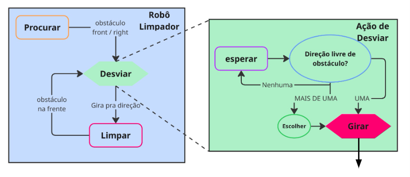

Máquina de Estados em Robótica
Nesta atividade, vamos revisar o conceito de máquina de estados finitos (FSM) e como implementá‑la para controlar um robô.
Conceito de Máquina de Estados Finitos (FSM)
Uma máquina de estados finitos (FSM) é um modelo computacional que descreve o comportamento de um sistema a partir de estados e transições, permitindo que sistemas complexos sejam modelados de forma clara e modular.
- Estados: representam as condições atuais do sistema.
- Transições: representam mudanças de estado em resposta a eventos ou condições.
Essa abordagem é muito útil em robótica, pois organiza o fluxo de decisões do robô de forma clara, reutilizável e testável.
Exemplo: Robô Limpador com Laser 2D
Agora,, vamos aplicar o conceito de FSM a um robô limpador que navega no ambiente, procura áreas para limpar e desvia de obstáculos. Para melhorar a capacidade do nosso robô, equipamos‑no com um sensor laser 2D.
Estados principais

Como mostra a figura acima, nosso robô pode ser caracterizado pelos estados principais:
- Procurar - o robô gira em trajetória elíptica até encontrar um obstáculo à frente ou à direita.
- Limpar - o robô avança, limpando a área à frente até que o sensor detecte um obstáculo frontal.
- Esperar (Desviar) - o robô aguarda enquanto avalia se existe uma direção livre.
- Girar (Desviar) - o robô gira até alinhar‑se com uma direção livre.
Sub‑estados da ação "Desviar"
No caso do nosso robô, detalhamos a ação Desviar:
- Esperar e escolher - avalia direções livres (direita, esquerda, traseira):
- Se nenhuma estiver livre → permanece em Esperar e tenta novamente.
- Se uma estiver livre → seleciona essa direção.
- Se mais de uma estiver livre → seleciona aleatoriamente uma delas.
- Girar - gira até o ângulo aproximado da direção escolhida.
Transições
Dado o ambiente do robô limpador, podemos definir as transições entre estados como na tabela abaixo:
| Origem | Condição | Destino | Observação |
|---|---|---|---|
| Procurar | obstáculo em frente ou direita | Esperar | ação Desviar |
| Limpar | obstáculo em frente | Esperar | ação Desviar |
| Esperar | sem direção livre (aguardar) | Esperar | tentar novamente |
| Esperar | pelo menos uma direção livre | Girar | ação Desviar |
| Girar | atingiu ângulo/direção livre | Limpar | fim da Desviar |
Estado inicial: Procurar.
Estrutura de código em Python
Em Python, podemos implementar a FSM com uma variável que guarda o estado atual (string) e uma função por estado, responsável pelas ações daquele estado. A função principal executa a função do estado atual e decide se o estado deve mudar.
Em vez de um grande bloco if/elif, usamos um dicionário que mapeia estado → função.
Robô Limpador
Considerando os estados, podemos desenhar o esqueleto do código como abaixo:
class Limpador:
def __init__(self):
# Estado inicial
self.robot_state = 'procurar'
# Tabela de despacho: estado → método
self.state_machine = {
'procurar': self.procurar,
'limpar': self.limpar,
'esperar': self.esperar,
'girar': self.girar,
}
def procurar(self):
"""Gira em trajetória elíptica (ex.: v=0.1, rz=0.1).
Transição quando há obstáculo à frente/direita → 'esperar'."""
# TODO: ler sensores, decidir transição
# mude para 'esperar' # quando condição atendida
pass
def limpar(self):
"""Avança limpando até detectar obstáculo frontal → 'esperar'."""
# TODO: publicar velocidade para frente; checar obstáculo
# mude para 'esperar'
pass
def esperar(self):
"""Avalia direções livres (dir/esq/trás).
0 opções → permanece 'esperar';
1 opção → escolhe; >1 → escolhe aleatoriamente → 'girar'."""
# TODO: computar direções livres e escolher alvo
# mude 'girar'
pass
def girar(self):
"""Executa rotação até o ângulo desejado (ação externa).
Ao alinhar → 'limpar'."""
# TODO: chamar ação/serviço de giro e monitorar conclusão
# return 'limpar'
pass
def control(self):
# ...
# Executa a ação do estado atual
self.state_machine[self.robot_state]()